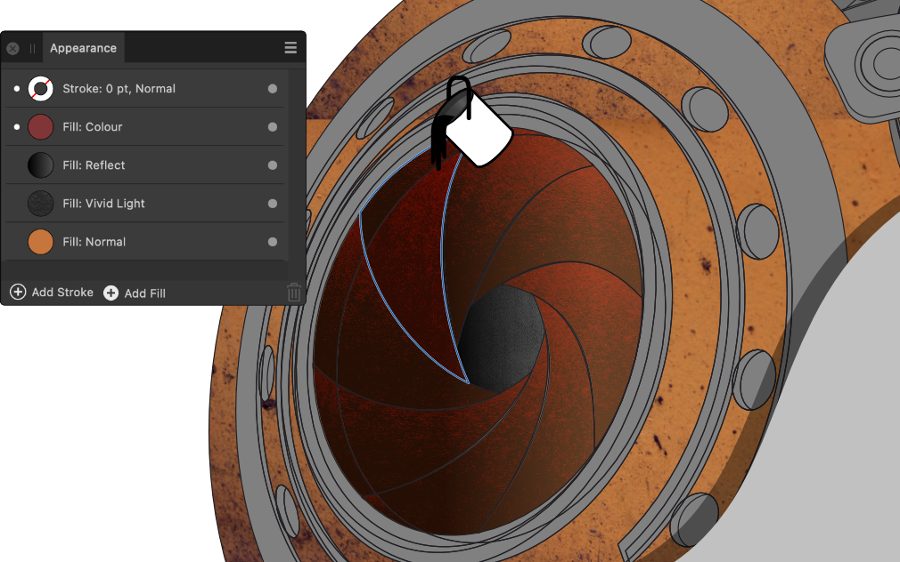

Flooding areas
The Vector Flood Fill Tool lets you flood areas with colour and texture as well as areas that can't otherwise be filled because they are not closed objects. New shapes are created as a result.


The Vector Flood Fill Tool lets you flood areas with colour and texture as well as areas that can't otherwise be filled because they are not closed objects. New shapes are created as a result.
Flood filling lets you 'colour in' areas of your design that can't otherwise be filled with the Fill Tool. This includes areas created from overlapping closed/geometric shapes as well as open curves.
The Vector Flood Fill Tool detects edges in your drawing and then, if a fully enclosed area is detected, it will flood fill to the area's boundary. The current solid colour (in the Tools, Colour or Swatches panels) or colour gradient (in the Swatches panel) is used for the fill, thus creating a new shape. Assets (vector and bitmap), stock images and folder images (from your operating system) can also be used to flood fill.
Some examples include:
Flooding is carried out by clicking on areas or dragging across multiple areas. The latter being a quick technique that avoids flooding specific objects one-by-one. You can flood fill any object even if it is not selected (filling the whole object) but you can select objects in advance if you want flooding to take into account intersecting shapes and curves.
The tool can flood with different types of fills, i.e.
You can select the layer object of any gradient or bitmap fill for editing with the Fill Tool—this could include swapping the gradient type, adjusting how the gradient/bitmap fill scales or how the bitmap pattern extends.
If any of the above fills have reduced opacity or have alpha, they can optionally be 'layered up' to create multi-fill effects when applied in multiples. For example, textures possessing transparency and/or transparency gradients can be placed over a base solid colour. A Fill mode on the tool's context toolbar lets you stack or replace fills.

When dragging across areas to flood fill, you can enable Fill to Visible Boundaries to fill to overlapping shapes' outlines and either detect (and fill to) internal edges or ignore internal edges. For the latter, if shapes have the same fill colour, then the flood fill will extend the fill to encompass those shapes automatically.

Set the context toolbar's Fit mode to control its scaling in advance of flood filling.